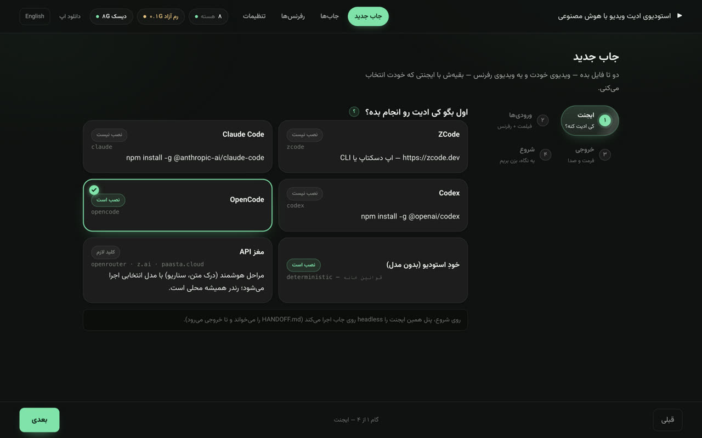
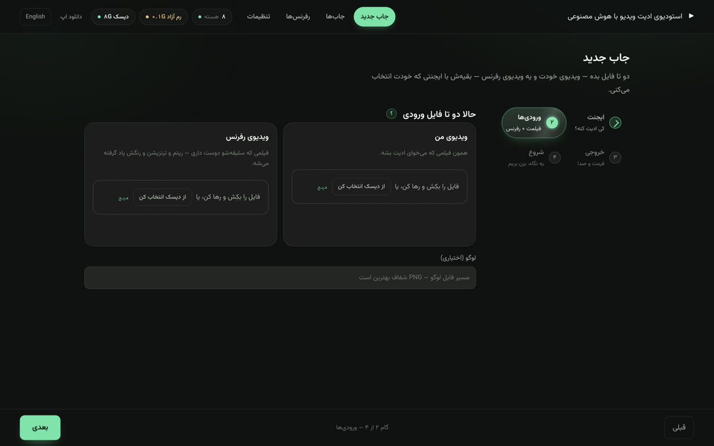
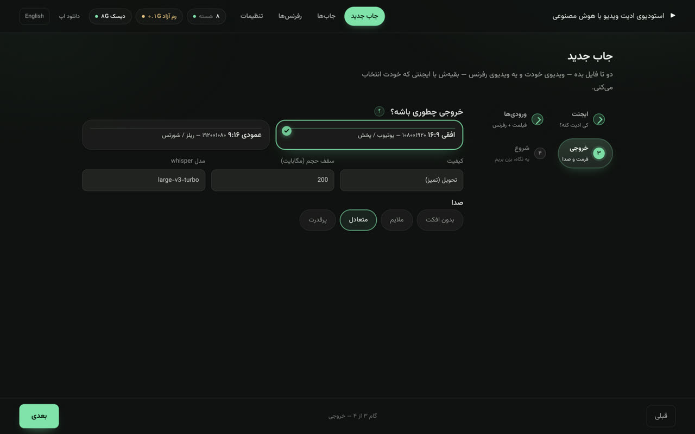
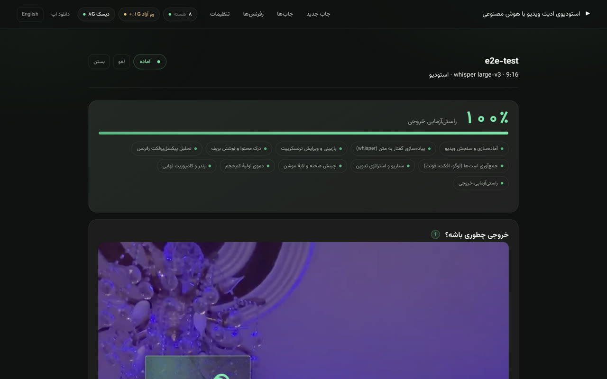

داخل اپ چطوریه؟
A look inside the app




چه کارهایی برات میکنه؟
What it does for you
ویدیوی خودت + یه ویدیوی رفرنس. سبک رفرنس پیکسلپرفکت تحلیل میشه — ریتم، ترنزیشن، پالت — و روی فیلم تو پیاده میشه.
whisper آفلاین با مدل بزرگ، بعد دروازهٔ بازبینی: هر خط قابل ویرایش، کلیک روی ساعت = پرش ویدیو.
«تراکم بیشتر»، «زیرنویس بالاتر»، «خط ۳: …» — بگو، اعمال میشه و دموی تازه میاد. تا تایید تو هیچی نهایی نمیشه.
۱۰۸۰×۱۹۲۰ یا ۱۹۲۰×۱۰۸۰، زیرنویس کلمهبهکلمهٔ Vazirmatn داخل حاشیهٔ امن پلتفرم، صداگذاری اندازهگیریشده.
هر رفرنس یه بار تحلیل میشه و برای همیشه میمونه — جاب بعدی با همون سبک بیدرنگ شروع میشه.
ادیت رو opencode / zcode / claude code / codex انجام میده یا مغز API خودت — کلیدها توی تنظیمات خودته.
مسیر هر جاب
Every job walks this path
نصب — قدم به قدم
Install guides
- فایل dmg رو از دکمهٔ بالا بگیر (حدود ۱۹۳ مگ).
- dmg رو باز کن و Video Studio رو بکش داخل Applications.
- چون بتا امضا نداره، اولین اجرا: راستکلیک → Open → Open. از دفعهٔ بعد عادیه.
- تنظیمات → فروشگاه مدلها → large-v3 رو دانلود کن. تمام!
- فایل Setup.exe رو از دکمهٔ بالا بگیر (حدود ۱۴۵ مگ).
- اگه SmartScreen پیام داد: More info → Run anyway — بتا هنوز امضا نداره.
- مراحل نصب رو برو و اپ رو باز کن.
- تنظیمات → فروشگاه مدلها → large-v3. Node و ffmpeg داخل خود اپ هستن.
داخل اپ همهچیز هست: Node، npm/npx، ffmpeg و ffprobe — چیزی نصب نمیکنی. فقط اولین رندر اینترنت میخواد (Chrome headless و رانتایم whisper یه بار دانلود میشن) و مدلها رو از خود اپ میگیری. رندرها با قانون خانه روی ۵۰٪ توان CPU قفلان.
چند تا سوال پرتکرار
FAQ
هیچجا — همهچیز روی سیستم خودت اجرا و ذخیره میشه؛ هیچ ویدیویی به سروری نمیره.
رندرها روی ۵۰٪ CPU قفلان و مدلها رو خودت انتخاب میکنی — از سبک ۷۸ مگی تا دقیقترین ۳ گیگابایتی.
خودکار — اپ از GitHub Releases چک میکنه، دانلود میکنه و با یه کلیک نصب میشه.
بتا کاملاً رایگانه؛ کلیدهای API اگه استفاده کنی مال خودته و رندر همیشه لوکال میمونه.
مشارکت در توسعه
استودیو متنبازه — باگ گزارش بده، قابلیت پیشنهاد بده یا مستقیم PR بزن. مستندات برای ایجنتها و توسعهدهندهها آمادهست (AGENTS.md و CONTRIBUTING.md)، و هر کامیت با GitHub Actions بیلد و تست میشه. Report bugs, propose features, or open a PR — every commit builds itself.